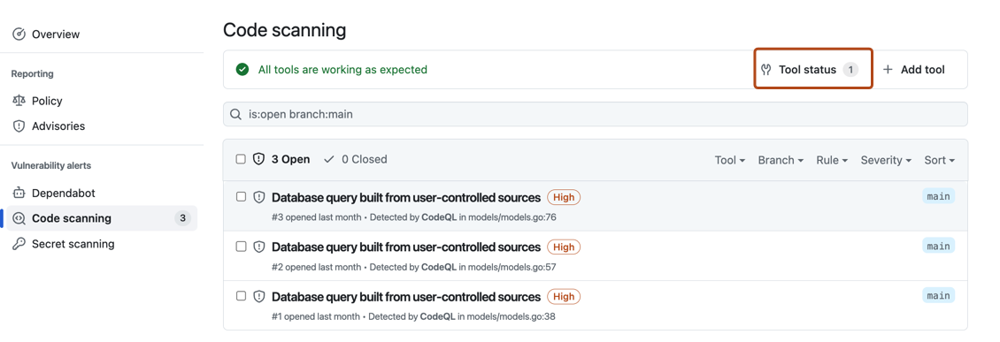
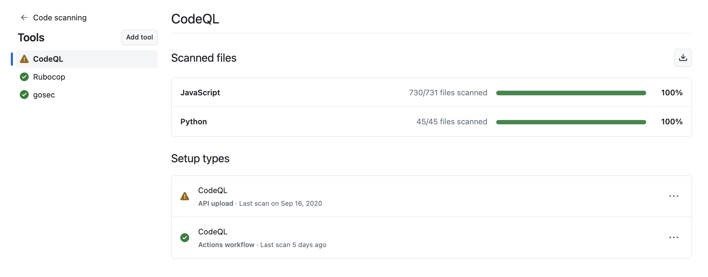
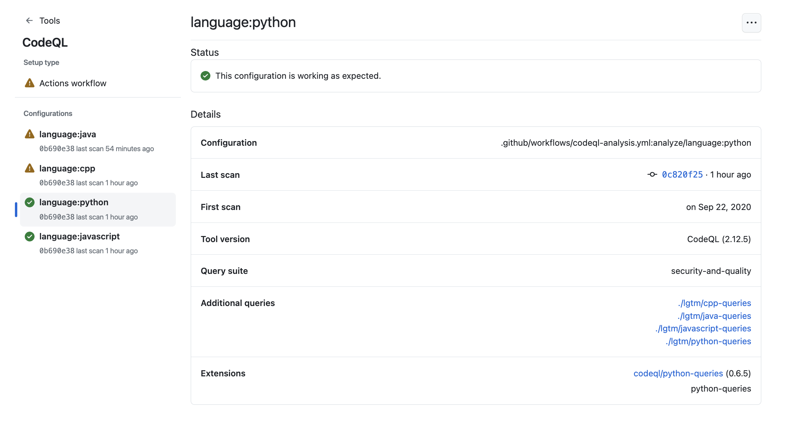

View real-time tool status, identify configuration problems, and download reports to keep your code scanning analysis running smoothly.
The tool status page shows information about all of your code scanning tools and is a good starting point for debugging problems. For more information about what the tool is and the information it provides, see About the tool status page.
The code scanning alerts page for each repository includes a tools banner with a summary of the health of your code scanning analysis, and access to the tool status page to explore your setup.

In the tool status page, you'll see a summary for one tool, highlighted in the sidebar. You can use the sidebar to view summaries for different tools.

For integrated tools such as CodeQL, you can see a percentage total of all the files most recently scanned in your repository, organized by programming language. You can also download detailed language reports in CSV format. See Downloading details of the files analyzed.
When you want to see more detailed information for the currently displayed tool, you can select a specific setup under "Setup types".
Under "Configurations" on the left of the screen, you can see information for each analysis run by this setup type, and any relevant error messages. To see detailed information about the most recent analysis run, select a configuration in the sidebar. You can download details of exactly which rules were run in that scan of the code and how many alerts were found by each rule. For more information, see Downloading lists of rules used.

This view will also show error messages. For more information, see Debugging using the tool status page.
For integrated tools such as CodeQL, you can download detailed reports from the tool status page in CSV format. This will show:
To download a report, select a tool you're interested in. Then on the top right of the page, click the button.
You can download the list of rules that code scanning is checking against, in CSV format. This will show:
To download a report, select a configuration you're interested in. Then click on the top right of the page, and select Download list of rules used.
You can remove stale, duplicate, or unwanted configurations for the default branch of your repository.
To remove a configuration, select the configuration you want to delete. Then click on the top right of the page, and select Delete configuration. Once you have read the warning about alerts, to confirm the deletion, click the Delete button.
Note
You can only use the tool status page to remove configurations for the default branch of a repository. For information about removing configurations from non-default branches, see Resolving code scanning alerts.
If you see that there is a problem with your analysis from the code scanning alerts page, you can use the tool status page to identify the problem. For integrated tools, you can see specific error messages in the detailed information section, related to specific code scanning tools. These error messages contain information about why the tool may not be performing as expected, and actions you can take. For more information about how to access this section of the tool status page, see Accessing detailed information about tools.
For integrated tools such as CodeQL, you can also use file coverage information to improve your analysis. For more information about interpreting file coverage percentages, see About the tool status page.
For more information, see Troubleshooting code scanning analysis errors and Troubleshooting SARIF uploads.